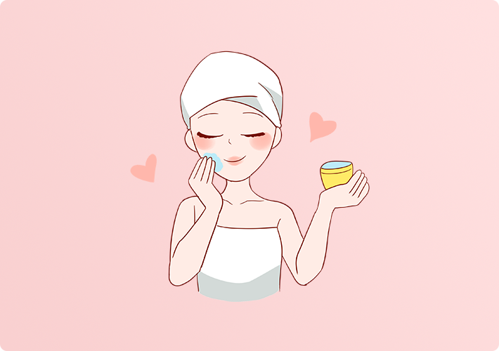

若日常不注意皮肤护理，基因带给你的一些皮肤问题可能会越来越明显，甚至难以修复
清洁是护肤的第一步。根据自身的皮肤类型，选择适合自己的洁面产品。但是清洁不要过度。一般一天两次即可。敏感肌肤，不要使用清洁能力太强的洁面产品。
化妆后，就要认真卸妆。卸妆需要使用专业的卸妆产品。才可以清除化妆品在皮肤上的残留物质，然后再用洗面奶清洗面部。
使用保湿霜的时候。不单单是只涂抹眼睛下面的皮肤，而是指眼睛周边一圈皮肤，都要涂抹，挤黄豆粒大小的眼霜，用手指，轻轻的敲打，以画圈的方式按摩，直至吸收。
清洁是护肤的第一步。根据自身的皮肤类型，选择适合自己的洁面产品。但是清洁不要过度。一般一天两次即可。敏感肌肤，不要使用清洁能力太强的洁面产品。
化妆后，就要认真卸妆。卸妆需要使用专业的卸妆产品。才可以清除化妆品在皮肤上的残留物质，然后再用洗面奶清洗面部。
使用保湿霜的时候。不单单是只涂抹眼睛下面的皮肤，而是指眼睛周边一圈皮肤，都要涂抹，挤黄豆粒大小的眼霜，用手指，轻轻的敲打，以画圈的方式按摩，直至吸收。